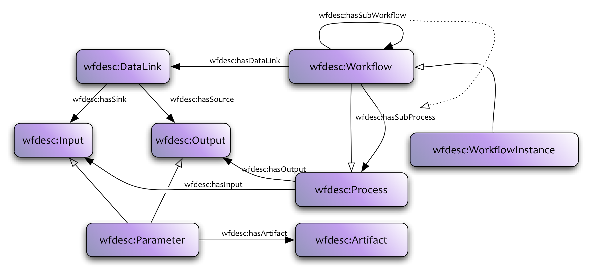

Scientific workflows are used to describe series of structured activities and computations that arise in scientific problem-solving, providing scientists from virtually any discipline with a means to specify and enact their experiments. From a computational perspective, such experiments (workflows) can be defined as directed acyclic graphs where the nodes correspond to analysis operations, which can be supplied locally or by third party web services, and where the edges specify the flow of data between those operations.
Besides being useful to describe and execute computations, workflows also allow encoding of scientific methods and know-how. Hence they are valuable objects from a scholarly point of view, for several reasons: (i) to allow assessment of the reproducability of results; (ii) to be reused by the same or by a different scientist; (iii) to be repurposed for other goals than those for which it was originally built; (iv) to validate the method that led to a new scientific insight; (v) to serve as live-tutorials, exposing how to take advantage of existing data infrastructure, etc. This follows a trend that can be observed in disciplines such as Biology and Astronomy, with other types of objects, such as databases, increasingly becoming part of the research outcomes of an individual or a group, and hence also being shared, cited, reused, versioned, etc.
Challenges for the preservation of scientific workflows in data intensive science, include: (a) the consideration of complex digital objects that comprise both their static and dynamic aspects, including workflow models, the provenance of their executions, and interconnections between workflows and related resources, (b) the provision of access, manipulation, sharing, reuse and evolution functions to these complex digital objects, (c) integral lifecycle management functions for workflows and their associated materials.
Thus the use of workflow specifications on their own does not guarantee to support reusability, shareability, reproducibility, or better understanding of scientific methods. Workflow environment tools evolve across the years, or they may even disappear. The services and tools used by the workflow may change or evolve too. Finally, the data used by the workflow may be updated or no longer available. To overcome these issues, additional information may be needed. This includes annotations to describe the operations performed by the workflow; annotations to provide details like authors, versions, citations, etc.; links to other resources, such as the provenance of the results obtained by executing the workflow, datasets used as input, etc.. Such additional annotations enable a comprehensive view of the experiment, and encourage inspection of the different elements of that experiment, providing the scientist with a picture of the strengths and weaknesses of the digital experiment in relation to decay, adaptability, stability, etc.
These richly annotation objects are what we call workflow-centric Research Objects. The notion of Research Object (as discussed in [[BECHHOFER11]]) is a general idea that aims to extend traditional publication mechanisms and take us "beyond the pdf" [[FORCE11]]]. An RO is an aggregation of resources along with annotations on those resources. The aggregation itself may also be annotated, where by annotation, we mean the association of arbitrary additional information with a resource. The Research Object thus collects together relevant resources along with annotations that enable the understanding, reuse etc. of its constituent parts. In a workflow-centric Reearch Object describing an investigation for example, annotations could describe how data sources have been used or how intermediate results were derived. Executable papers [[EXEC]] similarly aim to support validation, exploration and interaction in publication in order to support validation. Hunter [[HUNTER06]] proposes the notion of Scientific Publication Packages (SPP) to describe "the selective encapsulation of raw data, derived products, algorithms, software and textual publications". SPPs are motivated primarily by the need to create archives for the variety of artifacts produced during the course of a scientific investigation; they ideally contain data, methods, software and documents, but also their provenance as well.
The focus of Wf4Ever was on workflow preservation (and more specifically workflows supporting scientific investigation). Thus the objects that will be described using the model are inherently workflow-centric. Although the basic infrastructure (aggregation + annotation + domain vocabularies) that the RO model supports is applicable to many situations (for example the executable or enhanced publication of [[FORCE11]]), the specific vocabularies defined within the Wf4Ever RO model are intended to support those Research Objects that have workflows (methods) as their primary content.
The intention is that a Wf4Ever Research Object will aggregate information about a workflow (or collection of workflows) possibly including details of its execution trace, the data items consumed or produced by the workflow, plus provenance information about the lineage of the workflow, data items or the aggregation itself. This intention is that this information will support reproducability of the workflows, reuse of the components and, perhaps most importantly will facilitate subsequent understanding of the investigation that the workflow is intended to support. The support of "full-fat" reproducability in terms of re-execution of a process in order to produce identical results is problematic, particularly when operating in a distributed, web-service based ecosystem.
This particular document describes the vocabularies that describe Workflow-centric Research Objects within Wf4ever. A complete, functional RO based ecosystem will require a number of different services for creation, storage, manipulation, recommendation, visualisation etc. of Research Objects. These services are not considered here. Nor do we discuss vocabularies or mechanisms that support Research Object evolution.
The focus of Wf4Ever is on workflow preservation (and more specifically workflows supporting scientific investigation). Thus the objects that will be described using the model are inherently workflow-centric. Although the basic infrastructure (aggregation + annotation + domain vocabularies) that the RO model supports is applicable to many situations (for example the executable or enhanced publication of [[FORCE11]]), the specific vocabularies defined within the Wf4Ever RO model are intended to support those Research Objects that have workflows (methods) as their primary content.
The intention is that a Wf4Ever Research Object will aggregate information about a workflow (or collection of workflows) possibly including details of its execution trace, the data items consumed or produced by the workflow, plus provenance information about the lineage of the workflow, data items or the aggregation itself. This intention is that this information will support reproducability of the workflows, reuse of the components and, perhaps most importantly will facilitate subsequent understanding of the investigation that the workflow is intended to support. The support of "full-fat" reproducability in terms of re-execution of a process in order to produce identical results is problematic, particularly when operating in a distributed, web-service based ecosystem.
This particular document describes the vocabularies that describe Workflow-centric Research Objects within Wf4ever. A complete, functional RO based ecosystem will require a number of different services for creation, storage, manipulation, recommendation, visualisation etc. of Research Objects. These services are not considered here. Nor do we discuss vocabularies or mechanisms that support Research Object evolution.
This document describes the v0.1 release of the ontologies.
Research Objects play multiple roles. In the first case, they are technical objects. They provide access to the resources that are needed to support execution of investigations and record the provenance traces of those executions. They encapsulate dependencies between resources and maintain versioning information about the lineage and evolution of those resources.
At the same time, they are social objects. They encapsulate reusable protocols and know-how. They record best practices and support reproducability. They are citable artifacts that can be referred to and quoted. They record and represent information about the people involved in investigations -- those who create, use, extend and curate the objects.
These roles bring requirements on the representation structure and vocabularies used to describe Research Objects. This specification focuses on the technical aspects and describes the core Wf4Ever Research Object vocabularies that provide container structures and vocabulary for describing workflow objects. Additional vocabularies covering evolution, lifecycle, versioning and other social aspects will be covered elsewhere.
The Wf4Ever Research Object model consists of a suite of ontologies or vocabularies that are used to describe workflow-centric ROs. The key ontologies provided are:
ro:
Provides basic structure for the description of aggregated resources and the annotations that are made on those resources.
wfdesc:
A vocabulary for the description of workflows. This provides an abstraction that can be mapped to different particular workflow systems.
wfprov:
A vocabulary for the description of provenance information. This provides an abstraction that can be mapped to different provenance vocabularies.
Scientific workflows are used to describe series of structured activities and computations that arise in scientific problem-solving, providing scientists from virtually any discipline with a means to specify and enact their experiments. From a computational perspective, such experiments (workflows) can be defined as directed acyclic graphs where the nodes correspond to analysis operations, which can be supplied locally or by third party web services, and where the edges specify the flow of data between those operations.
Besides being useful to describe and execute computations, workflows also allow encoding of scientific methods and know-how. Hence they are valuable objects from a scholarly point of view, for several reasons: (i) to allow assessment of the reproducability of results; (ii) to be reused by the same or by a different scientist; (iii) to be repurposed for other goals than those for which it was originally built; (iv) to validate the method that led to a new scientific insight; (v) to serve as live-tutorials, exposing how to take advantage of existing data infrastructure, etc. This follows a trend that can be observed in disciplines such as Biology and Astronomy, with other types of objects, such as databases, increasingly becoming part of the research outcomes of an individual or a group, and hence also being shared, cited, reused, versioned, etc.
Challenges for the preservation of scientific workflows in data intensive science, include: (a) the consideration of complex digital objects that comprise both their static and dynamic aspects, including workflow models, the provenance of their executions, and interconnections between workflows and related resources, (b) the provision of access, manipulation, sharing, reuse and evolution functions to these complex digital objects, (c) integral lifecycle management functions for workflows and their associated materials.
Thus the use of workflow specifications on their own does not guarantee to support reusability, shareability, reproducibility, or better understanding of scientific methods. Workflow environment tools evolve across the years, or they may even disappear. The services and tools used by the workflow may change or evolve too. Finally, the data used by the workflow may be updated or no longer available. To overcome these issues, additional information may be needed. This includes annotations to describe the operations performed by the workflow; annotations to provide details like authors, versions, citations, etc.; links to other resources, such as the provenance of the results obtained by executing the workflow, datasets used as input, etc.. Such additional annotations enable a comprehensive view of the experiment, and encourage inspection of the different elements of that experiment, providing the scientist with a picture of the strengths and weaknesses of the digital experiment in relation to decay, adaptability, stability, etc.
Workflow descriptions can be made using the wfdesc ontology under the namespace http://purl.org/wf4ever/wfdesc#

The wfdesc ontology describes an abstract workflow description structure, which on the top level is defined as a wfdesc:Workflow.
A wfdesc:Workflow contains several wfdesc:Process instances, associated using the wfdesc:hasSubProcess property. Each of these (and the workflow itself) wfdesc:hasInput and wfdesc:hasOutput some wfdesc:Parameter (wfdesc:Input or wfdesc:Output). An wfdesc:Artifact is associated with a wfdesc:Parameter using wfdesc:hasArtifact. The wfdesc:Workflow also wfdesc:hasDataLink several wfdesc:DataLink instances, which forms the connection between parameters. Thus this ontology allows the description a direct acyclic graph, or a dataflow.
This ontology is meant as an upper ontology for more specific workflow definitions, and as a way to express abstract workflows, which could either be hand-crafted by users ("ideal workflow description") or extracted from workflow definitions of existing workflow systems, like Taverna's .t2flow and Scufl2 formats.
The wfprov ontology shows how to link these workflow descriptions to a provenance trace of a workflow execution.
IRI: http://purl.org/wf4ever/wfdesc#Artifact
IRI: http://purl.org/wf4ever/wfdesc#DataLink
wfdesc:DataLink is used to represent data dependencies between process templates. It means that the artifact generated at an wfdesc:Output (identified using wfdesc:hasSource) will be used by a wfdescInput (identified using wfdesc:hasSink).
The wfdesc:Processes that owns the wfdesc:Parameter instances which are the source and sink of a wfdesc:DataLink must be wfdesc:hasSubProcess of a the same wfdesc:Workflow which wfdesc:hasDataLink the data link, or be be parameters of that same workflow.
Thus links can only be made within a wfdesc:Workflow - although ports owned by the workflow itself appear both inside and outside the workflow (in opposite roles).
IRI: http://purl.org/wf4ever/wfdesc#Input
wfdesc:Input represents an input parameter to a wfdesc:Process. This can be compared to a function parameter, command line argument, files read, or parameter set by a user interface.
It is out of scope of wfdesc to define the nature or classification of the parameter, such as giving it a name, position or data type. This can be done with subclasses and/or subproperties.
IRI: http://purl.org/wf4ever/wfdesc#Output
wfdesc:Output represents an output parameter from a wfdesc:Process. This can be compared to functional return values, stdout/stdin, files written, or results shown in a user interface.
It is out of scope of wfdesc to define the nature or classification of the parameter, such as giving it a name, position or data type. This can be done with subclasses and/or subproperties.
IRI: http://purl.org/wf4ever/wfdesc#Parameter
This class represent a parameter of a process template. A wfdesc:Parameter must be a wfdesc:Input, a wfdesc:Output, or both.
A parameter is both an wfdesc:Input and wfdesc:Output when it is used on both sides of a subworkflow - see wfdesc:Workflow and wfdesc:DataLink for details.
IRI: http://purl.org/wf4ever/wfdesc#Process
A wfdesc:Process is used to describe a class of actions that when enacted give rise to processes. A process can have 0 or more wfdesc:Parameter instances associated using wfdesc:hasInput and wfdesc:hasOutput, signifying what kind of parameters the process will require and return.
It is out of scope for wfdesc to classify or specify the nature of the process, this should be done by subclassing and additional subproperties, for instance ex:perlScript or ex:restServiceURI
IRI: http://purl.org/wf4ever/wfdesc#Workflow
A wfdesc:Workflow is a directed graph in which the nodes are wfdesc:Process instances and the edges (wfdesc:DataLink instances) represent data dependencies between the constituent process templates.
A wfdesc:Workflow defines associated wfdesc:Process using hasProcessTemplate. A specialisation of this property is hasSubWorkflowTemplate, signifying that the process is a WorkflowTemplate itself, which is further described in a similar fashion.
As a subclass of wfdesc:Process a wfdesc:Workflow can also define wfdesc:hasInput/wfdesc:hasOutput parameters - these would be inputs taken at workflow execution time, and final outputs of the workflow. (Note: Not all dataflow systems have this concept of workflow parameters)
wfdesc:Parameter instances are linked using wfdesc:DataLink instances associated with the wfdesc:Workflow using wfdesc:hasDataLink.
A wfdesc:Parameter defined with wfdesc:hasInput on a wfdesc:Workflow is considered an wfdesc:Input "outside" the workflow template (ie. if it is a subworkflow), but an wfdesc:Output "inside" the workflow template (where it can be connected to a wfdesc:Input of a wfdesc:Process). Thus such parameters can be linked "through" the workflow template without having a "mirrored" port inside.
Example:
##
@prefix wfdesc: <http://purl.org/wf4ever/wfdesc#> .
:outerWorkflow a wfdesc:Workflow ;
wfdesc:hasSubWorkflow :innerWorkflow ;
wfdesc:hasSubProcess :procA, :procC .
:procA a wfdesc:Process ;
wfdesc:hasOutput :param1 .
:procC a wfdesc:Process ;
wfdesc:hasInput :param2 ;
wfdesc:hasOutput :param3 .
:innerWorkflow a wfdesc:Workflow ;
wfdesc:hasInput :param4 ;
wfdesc:hasOutput :param5 ;
wfdesc:hasProcess :procB .
:procB a wfdesc:Process ;
wfdesc:hasInput :param6 ;
wfdesc:hasOutput :param7 .
:innerWorkflow wfdesc:hasDataLink
[ wfdesc:hasSource :param4; wfdesc:hasSink :param6 ],
[ wfdesc:hasSource :param7; wfdesc:hasSink :param5 ] .
:outerWorkflow wfdesc:hasDataLink
[ wfdesc:hasSource :param1; wfdesc:hasSink :param4 ],
[ wfdesc:hasSource :param5; wfdesc:hasSink :param2 ] .
##
In this example :param1 is the output of :procA. :param1 is the source in a datalink that goes to the input :param4 of the :innerWorkflow. :param4 is however also the source of an inner datalink, going to input :param6 of the nested :procB.
From this :param4 is both an wfdesc:Input and wfdesc:Output (which is why these two classes are not disjoint)
IRI: http://purl.org/wf4ever/wfdesc#WorkflowInstance
A wfdesc:WorkflowInstance is a specialisation of a wfdesc:Workflow template which defines all data/parameters/settings that are required to form a wfprov:WorkflowRun.
IRI: http://purl.org/wf4ever/wfdesc#hasArtifact
This property associates a wfdesc:Parameter with an wfdesc:Artifact which can describe the artifact which would be used/generated on execution of the workflow.
IRI: http://purl.org/wf4ever/wfdesc#hasDataLink
This property is used to specify the wfdesc:DataLink instances of a given workflow template.
IRI: http://purl.org/wf4ever/wfdesc#hasInput
This object property is used to specify the wfdesc:Input parameter of a given wfdesc:Process.
IRI: http://purl.org/wf4ever/wfdesc#hasOutput
This object property is used to specify the wfdesc:Output parameter of a given wfdesc:Process.
IRI: http://purl.org/wf4ever/wfdesc#hasSink
This property is used to specify the wfdesc:Input parameter that acts as a sink from a given wfdesc:DataLink, consuming data from the link.
IRI: http://purl.org/wf4ever/wfdesc#hasSource
This property is used to specify the wfdesc:Output parameter that acts as a source to a given wfdesc:DataLink, providing data into the link.
IRI: http://purl.org/wf4ever/wfdesc#hasSubProcess
This object property is used to specify that the given workflow contains the given process as part of its definition.
Although not a requirement, such sub processes should have wfdesc:DataLink within the containing workflow connecting their parameters with parameters of the containing workflow, or with parameters other contained wfdesc:Process instances.
A specialialisation of sub process is wfdesc:hasSubWorkflow where the sub process is a nested wfdesc:Workflow.
IRI: http://purl.org/wf4ever/wfdesc#hasSubWorkflow
This object property is used to associate a workflow template to another workflow template, specifying that the given workflow has the given sub-workflow as a contained process.
This is a specialisation of hasProcessTemplate.
The example below illustrates a workflow wf1 that is composed of three processors :procA, :wf2 and :procC, which are connected in sequence using data links. :wf2 is a subworkflow that contains the process :procB.
@prefix wfdesc: <http://purl.org/wf4ever/wfdesc#> . :wf1 a wfdesc:WorkflowTemplate ; wfdesc:hasSubWorkflow :wf2 ; wfdesc:hasSubProcess :procA, :procC . :procA a wfdesc:Process ; wfdesc:hasOutput :param1 . :procC a wfdesc:Process ; wfdesc:hasInput :param2 ; wfdesc:hasOutput :param3 . :wf2 a wfdesc:WorkflowTemplate ; wfdesc:hasInput :param4 ; wfdesc:hasOutput :param5 ; wfdesc:hasProcess :procB . :procB a wfdesc:Process ; wfdesc:hasInput :param6 ; wfdesc:hasOutput :param7 . :innerWorkflow wfdesc:hasDataLink [ wfdesc:hasSource :param4; wfdesc:hasSink :param6 ], [ wfdesc:hasSource :param7; wfdesc:hasSink :param5 ] . :wf1 wfdesc:hasDataLink [ wfdesc:hasSource :param1; wfdesc:hasSink :param4 ], [ wfdesc:hasSource :param5; wfdesc:hasSink :param2 ] .
Here is an example research object containing a single workflow a_workflow.t2flow and an annotation which as been added by a software agent.
@base <../> . @prefix ro: <http://purl.org/wf4ever/ro#> . @prefix ao: <http://purl.org/ao/> . @prefix ore: <http://www.openarchives.org/ore/terms/> . @prefix dct: <http://purl.org/dc/terms/> . @prefix xsd: <http://www.w3.org/2001/XMLSchema#> . @prefix foaf: <http://xmlns.com/foaf/0.1/> . @prefix rdfg: <http://www.w3.org/2004/03/trix/rdfg-1/> . <.> a ro:ResearchObject, ore:Aggregation ; ore:aggregates <a_workflow.t2flow>, :ann1 ; dct:created "2011-12-02T15:01:10Z"^^xsd:dateTime ; dct:creator [ a foaf:Person; foaf:name "Stian Soiland-Reyes" ] . <a_workflow.t2flow> a ro:Resource . :proxy1 a ro:Proxy ; ore:proxyFor <a_workflow.t2flow> ; ore:proxyIn <.> ; dct:created "2011-12-02T15:02:10Z"^^xsd:dateTime ; dct:creator [ a foaf:Person; foaf:name "Stian Soiland-Reyes" ] . :ann1 a ro:Annotation, ro:SemanticAnnotation ; ao:body <.ro/ann1> ; ao:annotatesResource <a_workflow.t2flow>, <.> ; dct:created "2011-12-02T15:02:13Z"^^xsd:dateTime ; dct:creator [ a foaf:Agent ; foaf:name "t2flow workflow annotation extractor" ] . <.ro/ann1> a rdfg:Graph ; dct:created "2010-05-14T12:02:12Z"^^xsd:dateTime ; dct:creator [ a foaf:Person ; foaf:name "Marco Roos" ] .
Here we can see that Stian has made a research object at 15:01:10, and at 15:02:10 he added <a_workflow.t2flow> to the research object. Note that in this case we do not have informatio about when <a_workflow.t2flow> was created or by whom. The research object also aggregates an annotation :ann1. This annotation was created by "t2flow workflow annotation extractor" a few seconds after Stian added <a_workflow.t2flow> and is an annotation on the aggregated resource. We are also told that the content of annotation <.ro/ann1> was created by Marco more than a year earlier. The original annotation by Marco was found inside the t2flow by the extractor.
This example serves to illustrate that annotations can be made on both the entire RO and resources aggregated within it.
Resolving the annotation body gives:
@base <../> . @prefix ro: <http://purl.org/wf4ever/ro#> . @prefix wfdesc: <http://purl.org/wf4ever/wfdesc#> . @prefix wf4ever: <http://purl.org/wf4ever/wf4ever#> . @prefix foaf: <http://xmlns.com/foaf/0.1/> . @prefix ao: <http://purl.org/ao/> . @prefix dct: <http://purl.org/dc/terms/> . @prefix xsd: <http://www.w3.org/2001/XMLSchema#> . <.> a wf4ever:WorkflowResearchObject . <a_workflow.t2flow> a wfdesc:Workflow ; wfdesc:hasInput :in1 ; wfdesc:hasOutput :out1 ; wfdesc:hasDataLink [ wfdesc:hasSource :in1 ; wfdesc:hasSink :out1 ; ] ; dct:title "A workflow" ; dct:description "A workflow that directly outputs its only input" ; dct:created "2010-05-14T12:02:12Z"^^xsd:dateTime ; dct:creator [ a foaf:Person ; foaf:name "Marco Roos" ] . :in1 dct:description "Any value" . :out1 dct:description "The value given to in1" .
Inside the annotation body, which we have been told was done by Marco, we find an abstract version of the .t2flow workflow (using the wfdesc ontology) which has been extracted by the agent. This reveals some workflow annotations done by Marco in 2010; title and description on the workflow, and descriptions for the input and output ports.
This example comes from a use case that deals with large sets of tabular data (catalogues of numbers) curated by the user. The data are calculated by means of mathematical equations based on experimental values coming from external data repositories. Updating of the external data repositories has an impact on the curation of the user dataset, it is essential to know how (in which quantity) and when these databases are updated, so that the propagation of these changes through the existing internal relation among the data can be triggered and registered.
The scientific experiment represented by this research object pertains to the multi-wavelength study for a sample of the most isolated galaxies in the local universe. This study characterizes each galaxy of this sample through both the measurement of basic astrophysical properties:Specifically, this research object is focused on the calculation of the intrinsic luminosity in the Johnson B-band, in order to achieve it the measurement or calculation of all those astrophysical properties is needed.
This research object consists of several resources, including workflows, input and output datasets, scripts, web services and other documents. The type and role of each of these resources (by their relative name) are as follows:
Here we provide snippets of RDF illustrating particular aspects of the RO description. These snippets are all taken from the RO manifest.
<http://sandbox.wf4ever-project.org/rosrs5/ROs/HyperLEDALuminosities/.ro/manifest>
dct:created "2012-02-01T09:33:56.923Z"^^<http://www.w3.org/2001/XMLSchema#dateTime> ;
dct:creator [
a <http://xmlns.com/foaf/0.1/Agent> ;
foaf:name "RODL"
] ;
ore:describes <http://sandbox.wf4ever-project.org/rosrs5/ROs/HyperLEDALuminosities/> ;
a <http://purl.org/wf4ever/ro#Manifest> .
The following snippet captures the basic aggregation of resources within the RO.
<http://sandbox.wf4ever-project.org/rosrs5/ROs/HyperLEDALuminosities/>
dct:created "2012-02-01T09:33:56.832Z"^^<http://www.w3.org/2001/XMLSchema#dateTime> ;
dct:creator <https://www.google.com/accounts/o8/id?id=AItOawl7tEZAtdiQmIigvXcU4KkhGsBzgm0gfKM> ;
ore:isDescribedBy <http://sandbox.wf4ever-project.org/rosrs5/ROs/HyperLEDALuminosities/.ro/manifest> ;
a <http://purl.org/wf4ever/ro#ResearchObject> ;
ore:aggregates <http://leda.univ-lyon1.fr/ledacat.cgi>,
<http://sandbox.wf4ever-project.org/rosrs5/ROs/HyperLEDALuminosities/.ro/manifest#0f184259-a189-4d2c-8c04-66d7d322d1a8>,
<http://sandbox.wf4ever-project.org/rosrs5/ROs/HyperLEDALuminosities/.ro/manifest#14e42518-b337-2312-a76b-aa2b21cb3222>,
...
<http://sandbox.wf4ever-project.org/rosrs5/ROs/HyperLEDALuminosities/.ro/manifest#annGathering>,
<http://sandbox.wf4ever-project.org/rosrs5/ROs/HyperLEDALuminosities/.ro/manifest#annPropagation>,
...
<http://sandbox.wf4ever-project.org/rosrs5/ROs/HyperLEDALuminosities/CONTENT.txt>,
<http://sandbox.wf4ever-project.org/rosrs5/ROs/HyperLEDALuminosities/D1.2.pdf>,
...
<http://sandbox.wf4ever-project.org/rosrs5/ROs/HyperLEDALuminosities/GoldenTrace.txt>,
<http://sandbox.wf4ever-project.org/rosrs5/ROs/HyperLEDALuminosities/NamesLEDA.txt>,
<http://sandbox.wf4ever-project.org/rosrs5/ROs/HyperLEDALuminosities/Paturel.pdf>,
<http://sandbox.wf4ever-project.org/rosrs5/ROs/HyperLEDALuminosities/README.txt>,
<http://sandbox.wf4ever-project.org/rosrs5/ROs/HyperLEDALuminosities/RECIPES.txt>,
<http://sandbox.wf4ever-project.org/rosrs5/ROs/HyperLEDALuminosities/Ruiz.pdf>,
<http://sandbox.wf4ever-project.org/rosrs5/ROs/HyperLEDALuminosities/Vauglin.pdf>,
...
<http://sandbox.wf4ever-project.org/rosrs5/ROs/HyperLEDALuminosities/btcNew.txt>,
<http://sandbox.wf4ever-project.org/rosrs5/ROs/HyperLEDALuminosities/calculateDistance.py>,
...
<http://sandbox.wf4ever-project.org/rosrs5/ROs/HyperLEDALuminosities/comparison_and_update_values_475535.>,
...
<http://sandbox.wf4ever-project.org/rosrs5/ROs/HyperLEDALuminosities/eq2gal.py>,
<http://sandbox.wf4ever-project.org/rosrs5/ROs/HyperLEDALuminosities/extractJ2000Coord.py>,
<http://sandbox.wf4ever-project.org/rosrs5/ROs/HyperLEDALuminosities/extractPropertyVal.py>,
<http://sandbox.wf4ever-project.org/rosrs5/ROs/HyperLEDALuminosities/morphoNew.txt>,
..
<http://sandbox.wf4ever-project.org/rosrs5/ROs/HyperLEDALuminosities/updating.py>,
<http://sandbox.wf4ever-project.org/rosrs5/ROs/HyperLEDALuminosities/velocitiesNew.txt> .
An annotation expressing creation metadata. Jose Enrique Luiz created resources GoldenTrace.txt.
<http://sandbox.wf4ever-project.org/rosrs5/ROs/HyperLEDALuminosities/.ro/manifest#14e42518-b337-2312-a76b-aa2b21cb3222>
ao:body <http://sandbox.wf4ever-project.org/rosrs5/ROs/HyperLEDALuminosities/GoldenTrace.txt> ;
dct:created "2012-02-01T09:37:23.662Z"^^<http://www.w3.org/2001/XMLSchema#dateTime> ;
dct:creator _:A0 ;
ao:annotatesResource <http://sandbox.wf4ever-project.org/rosrs5/ROs/HyperLEDALuminosities/> ;
a ao:Annotation .
<http://sandbox.wf4ever-project.org/rosrs5/ROs/HyperLEDALuminosities/.ro/manifest#14e42518-b337-4698-a76b-aa2b21cb3222>
ao:body <http://sandbox.wf4ever-project.org/rosrs5/ROs/HyperLEDALuminosities/.ro/RECIPES.txt-8230278887054687059> ;
dct:created "2012-02-01T09:37:23.662Z"^^<http://www.w3.org/2001/XMLSchema#dateTime> ;
dct:creator _:A0 ;
ao:annotatesResource <http://sandbox.wf4ever-project.org/rosrs5/ROs/HyperLEDALuminosities/RECIPES.txt> ;
a ao:Annotation .
_:A0
a <http://xmlns.com/foaf/0.1/Agent> ;
foaf:name "Jose Enrique Ruiz" .
Finally, we have annotations that describe the fact that a particular workflow run made use of data sets to produce some results.
<http://leda.univ-lyon1.fr/ledacat.cgi>
a <http://purl.org/wf4ever/wf4ever#WebServiceProcessTemplate> .
<http://sandbox.wf4ever-project.org/rosrs5/ROs/HyperLEDALuminosities/.ro/annGathering#GatheringRun1>
wfprov:describedByWorkflow <http://sandbox.wf4ever-project.org/rosrs5/ROs/HyperLEDALuminosities/gathering_galaxy_properties_using_hyperleda_129473.> ;
wfprov:usedInput <http://sandbox.wf4ever-project.org/rosrs5/ROs/HyperLEDALuminosities/NamesLEDA.txt> ;
a <http://purl.org/wf4ever/wfprov#WorkflowRun> .
<http://sandbox.wf4ever-project.org/rosrs5/ROs/HyperLEDALuminosities/NamesLEDA.txt>
a <http://purl.org/wf4ever/wf4ever#Dataset> .
<http://sandbox.wf4ever-project.org/rosrs5/ROs/HyperLEDALuminosities/agNew.txt>
wfprov:wasOutputFrom <http://sandbox.wf4ever-project.org/rosrs5/ROs/HyperLEDALuminosities/.ro/annGathering#GatheringRun1> ;
a <http://purl.org/wf4ever/wf4ever#Dataset> .
<http://sandbox.wf4ever-project.org/rosrs5/ROs/HyperLEDALuminosities/btNew.txt>
wfprov:wasOutputFrom <http://sandbox.wf4ever-project.org/rosrs5/ROs/HyperLEDALuminosities/.ro/annGathering#GatheringRun1> ;
a <http://purl.org/wf4ever/wf4ever#Dataset> .
<http://sandbox.wf4ever-project.org/rosrs5/ROs/HyperLEDALuminosities/extractJ2000Coord.py>
a <http://purl.org/wf4ever/wfdesc#Process> .
<http://sandbox.wf4ever-project.org/rosrs5/ROs/HyperLEDALuminosities/extractPropertyVal.py>
a <http://purl.org/wf4ever/wfdesc#Process> .
<http://sandbox.wf4ever-project.org/rosrs5/ROs/HyperLEDALuminosities/gathering_galaxy_properties_using_hyperleda_129473.>
wfdesc:hasSubProcess <http://leda.univ-lyon1.fr/ledacat.cgi>, <http://sandbox.wf4ever-project.org/rosrs5/ROs/HyperLEDALuminosities/extractJ2000Coord.py>, <http://sandbox.wf4ever-project.org/rosrs5/ROs/HyperLEDALuminosities/extractPropertyVal.py> ;
a <http://purl.org/wf4ever/wfdesc#Workflow> .
<http://sandbox.wf4ever-project.org/rosrs5/ROs/HyperLEDALuminosities/j2000Coords.txt>
wfprov:wasOutputFrom <http://sandbox.wf4ever-project.org/rosrs5/ROs/HyperLEDALuminosities/.ro/annGathering#GatheringRun1> ;
a <http://purl.org/wf4ever/wf4ever#Dataset> .
<http://sandbox.wf4ever-project.org/rosrs5/ROs/HyperLEDALuminosities/logr25New.txt>
wfprov:wasOutputFrom <http://sandbox.wf4ever-project.org/rosrs5/ROs/HyperLEDALuminosities/.ro/annGathering#GatheringRun1> ;
a <http://purl.org/wf4ever/wf4ever#Dataset> .
<http://sandbox.wf4ever-project.org/rosrs5/ROs/HyperLEDALuminosities/velocitiesNew.txt>
wfprov:wasOutputFrom <http://sandbox.wf4ever-project.org/rosrs5/ROs/HyperLEDALuminosities/.ro/annGathering#GatheringRun1> ;
a <http://purl.org/wf4ever/wf4ever#Dataset> .
The v0.1 RO ontologies can be found on github as OWL/Turtle format:
Note on namespaces:
wfdesc:Artifact is used to provide information about a class of artifacts. For example, it can be used to specify the datatype of a dataset or the structure of a document.
An wfdesc:Artifact is associated with a wfdesc:Parameter using wfdesc:hasArtifact.
The distinction between a parameter and artifact is that the parameter can be customized to describe the particular role the artifact plays with regards to the process (and can be linked using wfdesc:DataLink) - while the wfdesc:Artifact can describe the syntactic and semantic datatype.